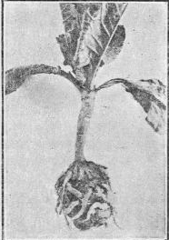

366. Other Insect Enemies Of Cabbage
Description
This section is from the book "Vegetable Gardening", by Ralph L. Watts. Also available from Amazon: Vegetable Gardening.
366. Other Insect Enemies Of Cabbage
The southern cabbage butterfly (Pontia protodice)y the cross-striped cabbage worm (Evergestis rimosalis), the common cabbage looper (Autographa brassicae), the imported cabbage web-worm, the harlequin cabbage bug (Murgantia histrionica), cutworms, flea-beetles and leaf-beetles.
367. Club Root (Plasmodiophora Brassicae)
Club Root (Plasmodiophora Brassicae), also known as "club foot" and "clump foot," is unquestionably the most serious disease of crucifers. (Figure 72.) If uncontrolled it will soon spread through a community and render the profitable cultivation of cabbage and allied plants impossible for several years, a situation that has developed in a few sections of the United States. The malady has been known in Europe for more than a century and in this country for many years.
The disease is most destructive to cabbage and turnip, but also affects cauliflower, brussels sprouts, kale, radish, kohl-rabi, rutabaga, white mustard and many cruciferous weeds, shepherd's purse and hedge mustard being especially subject to infection.
The character of the disease and its relation to "clubbing" were determined by the Russian botanist, Woronin, who found that the micro-organism which causes the distorted enlargement of roots was a slime mold and not a bacterium nor a fungus. There is distinct "clubbing" in many cases, while in others irregular knots are formed. When the disease has advanced for several weeks, the deformed roots are incapable of supplying the plants with sufficient moisture and nourishment. The plants then become dwarfed and lighter in color. Affected plants wilt quickly in warm, sunny weather, especially if preceded by humid growing weather. The disease is less serious with the early than with the late crop, for with the best conditions for growth at this time many of the infected plants will mature, although the heads are usually small. Plants set in the field in June or July seldom mature marketable heads if attacked by club root.
Fig. 72. CLUB ROOT OF CABBAGE.
The spores of this disease are inclosed by protective coverings that give them great vitality. It is not uncommon for the disease to recur in soils where crucifers have not been grown for 10 or 15 years. With annual tillage the spores soon become mixed with the soil and the malady may spread over the field or the entire farm or the community, and as no treatment of the plants has been found effective, the grower must resort to preventive measures. The following paragraphs relate to ways of infestation or dissemination and methods of prevention:
1. As young seedlings are most susceptible to attack, great care should be exercised in selecting soil for the seed bed. Affected plants should always be discarded.
2. Rotation should be practiced, in which cruciferous plants should not be planted more frequently than every four years.
3. The disease thrives best in acid soils. In Belgium the calcareous soils were the last to become infested, and lime is the best-known means of soil treatment, although often unsatisfactory. The New Jersey Station reports that 75 bushels of stone lime an acre gave as good results as larger applications. The lime should be applied in the fall or at least several months in advance of planting.
4. Roots, stems and leaves from diseased fields should be burned. If fed to stock or used for composting such refuse will be a certain means of disseminating the malady.
5. In the purchase of all kinds of stable manures, the grower should make certain that the stock has not been fed plants which might cause infestation.
6. The disease is often found in small patches. The safest policy in such a case is to inclose the plat with a fence to prevent the spores being carried to other parts of the farm by means of implements, wagons, and the feet of horses and workmen.
7. Wild mustard, shepherd's purse and other cruciferous weeds should not be allowed to grow and serve as host plants in fields which will be used for cabbage or allied crops.
8. The grower should always guard against the purchasing of plants that have been produced in soils infested with club root, for this would be a certain means of disseminating the disease.
Continue to:
- prev: 365. The Imported Cabbage Worm (Pontia Rapae)
- Table of Contents
- next: 368. Black Rot (Pseudotnonas Campestris)
Tags
plants, crops, gardening, cultivated, harvesting, food ,greenhouses, fertiliser, vegitables